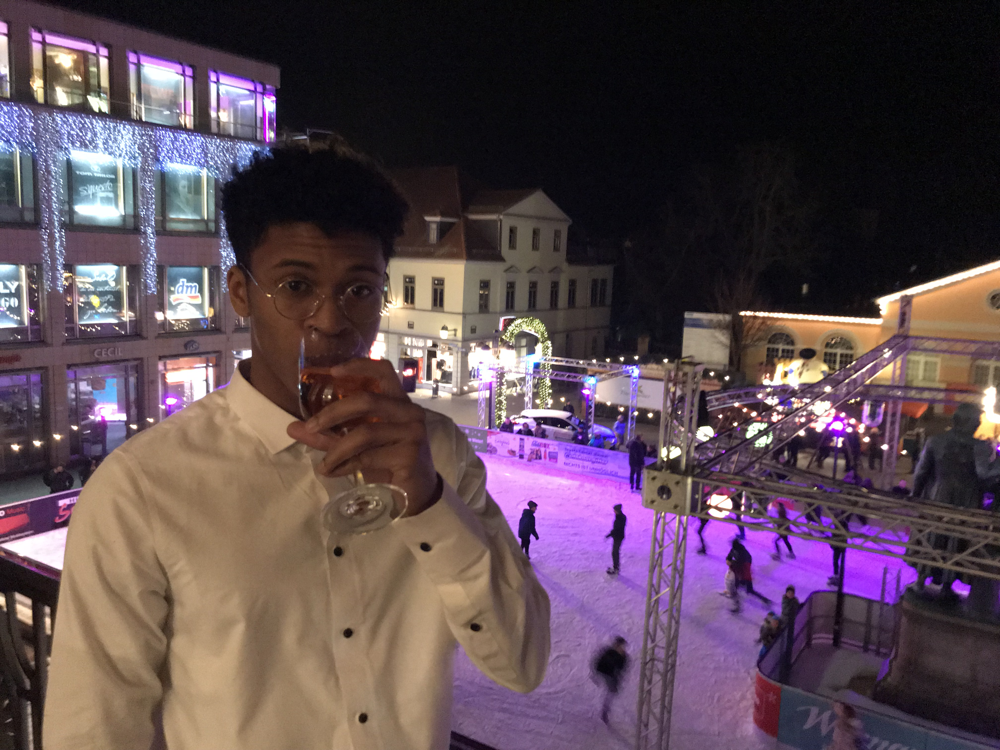

Proficient with Python, Pycharm, Selenium, Pandas, HTML 5, CSS 3,MySQL, JS
Learning Website Delpoyment techniques
Interests
Conversational german
Pick-up basketball
History literature
Stocks
Traveling
Education
Walter Johnson High School
8/2017 - 7/2018
Bethesda, MD
President of Black Student Union
Social Media Engineer of Minority Scholar Program
Leadership/Mentorship role under the Minority Scholar Program
San Diego State University
Class of 2021
Finance
Founding Participant at Zip Launch Pad at San Diego State University ( The entrepreneur incubator )
Developed Entrepreneurial ideas hand in hand with San Diego State University culminating in
the creation of a model/product map for my business
Associated Students ( Student Government ) financial council member at San Diego State University
Acquired intimate knowledge with SQL, Relational Databases, and Database management
Successfully completed Statistics, Management Information System with As
Prince George's Community College
Current
Electrical Engineering
Beginning Fall 2019
Experience
Governor Office of Community Initiatives
07/2016 - 08/2016
Data Engineer Internship
Successfully research and created a database
used to track hundreds of places of worship for three counties in Maryland
Provided communication between local government and state government
Gained valuable experience with Excel, VBA, Selenium,and Python
Learned professional techniques for web scraping such as POM Model,
Scraping Etiquette,HTML Parsing, DOM Parsing
Miguel Palmeiro’s Law Firm
09/2016 - 10/2016
Paralegal Fellowship
Studied the practice of law under guidance from senior attorneys
Learned and carried out security measures for sensitive legal documents
Learned the fundamentals of a self-developed business first hand
San Diego State University
01/2018 - 4/2018
Tutor
Tutored 8 College kids in Mathematics, Microeconomics and Information Systems
whom all passed with a B or above
Learned how to effectively break down concepts with minimal to no jargon
Discovered the various learning styles of individuals and the method that works best for myself
Human Rights Campaign
05/2018-07/2018
Field Manager
Integral leadership position where I ensured the safety of coworkers,
as well as maintain a certain degree of productivity to meet our daily goals
Form meaningful connections with people in a short space of time to attract donations for my company
In my time there I raised $10400 and gained 85 new monthly subscribers for the company
Daily briefings of my crew which I would generate a detailed report on their behavior
and performance for upper management
Gained valuable experience inspiring and leading a small team
through extreme conditions (100+ degree temperatures)

John F Kenny
Highly focused and results-oriented individual seeking to
further my current knowledge of programming and new opportunities to grow my career.
Former business major: in first year of an Electrical Engineering program
Expertise
Data Mining
Selenieum, Pythons Requests library, and Pandas
Automation
Python and Shell languages to automate daily tasks


.png)
.png)